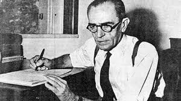

Publicado em: 25 de outubro de 2025
Lei fala mais alto: Graciliano Ramos multa o próprio pai
Além de um dos maiores nomes da literatura brasileira, Graciliano Ramos chamou atenção em Alagoas por sua postura firme como prefeito. Entre os casos mais lembrados está a multa aplicada contra o próprio pai.
Por ChatGPT
Poucos escritores brasileiros conseguiram unir vida pública e literatura de maneira tão marcante quanto Graciliano Ramos. Autor de clássicos como Vidas Secas e São Bernardo, ele é lembrado pelo olhar crítico, pela escrita concisa e pela dureza realista com que retratava o Brasil. Mas antes de ser reconhecido nacionalmente como romancista, Graciliano atuou como prefeito de Palmeira dos Índios (AL), entre 1928 e 1930. E foi nesse período que protagonizou uma das histórias mais curiosas — e até hoje lembradas — da política brasileira: a vez em que multou o próprio pai.
Um prefeito escritor
Palmeira dos Índios, na época, era uma cidade pequena, marcada por problemas típicos do interior nordestino: falta de infraestrutura, desorganização urbana e disputas políticas locais. Quando assumiu a prefeitura, Graciliano surpreendeu pela seriedade com que tratou o cargo. Seus relatórios administrativos, enviados ao governo de Alagoas, eram escritos com estilo literário, objetivos e críticos — tanto que se tornaram célebres e são considerados uma espécie de “ensaio geral” da prosa que depois marcaria sua ficção.
A multa no próprio quintal
Foi nesse contexto que ocorreu o episódio inusitado. Um dos regulamentos municipais estabelecia que era proibido criar gado em terrenos baldios dentro da cidade. O infrator? Ninguém menos que Sebastião Ramos, pai do prefeito.
Sem pestanejar, Graciliano aplicou a multa. Para ele, a lei valia igualmente para todos — não havia espaço para privilégios, mesmo quando se tratava de família. A decisão causou espanto na comunidade, mas também reforçou sua imagem de gestor íntegro e inflexível.
Ética e literatura caminham juntas
Esse episódio aparentemente pequeno revela muito sobre a personalidade de Graciliano Ramos. O mesmo rigor que aplicava na vida pública estava presente em sua obra literária. Sua escrita não poupava ilusões: era direta, dura, impregnada de realismo. Assim como multou o pai para manter a ordem, retratava em seus livros a realidade sem suavizar as contradições sociais.
Em São Bernardo, por exemplo, Paulo Honório é o símbolo da ambição sem escrúpulos; em Vidas Secas, a família de retirantes mostra a brutalidade da seca e da pobreza. Graciliano não abria concessões nem na ficção, nem na política.
O legado de um homem público raro
O episódio da multa tornou-se parte da memória folclórica de Palmeira dos Índios e até hoje é contado como exemplo de honestidade. Para além do escritor consagrado, fica a imagem de um homem público raro no Brasil: aquele que acreditava que a justiça não tinha sobrenome, e que a ética não podia ser negociada.
Ao aplicar a lei contra o próprio pai, Graciliano Ramos deixou uma lição que atravessa o tempo. Sua gestão pode ter sido curta, mas consolidou a ideia de que era possível governar com rigor e transparência. E, mais do que isso, mostrou que a literatura e a vida, em sua trajetória, eram inseparáveis.
Fontes
- Relatórios de Palmeira dos Índios, de Graciliano Ramos (1928–1930).
- Blog Instituto Singularidades — Dia Nacional do Escritor: 10 curiosidades sobre grandes autores brasileiros.
- SILVEIRA, Ênio. Graciliano Ramos: vida e obra. Rio de Janeiro: Civilização Brasileira, 1969.